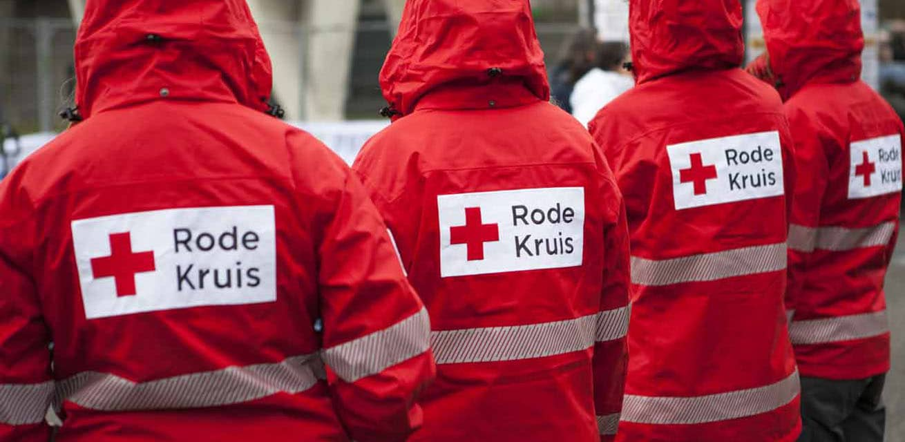

Junior's Favoriete Doel is Rode Kruis
Waarom Rode Kruis Het mij Favoriete Doel is omdat ze mensen
in nood te helpen, ongeacht hun achtergrond, nationaliteit of
overtuiging. Dit altruïstische streven spreekt ons aan.
Het Rode Kruis handhaaft een neutrale en onpartijdige positie
bij het bieden van hulp, wat betekent dat ze proberen alle betrokkenen
in een conflict of noodsituatie te helpen zonder partij te kiezen. Dit
draagt bij aan het vertrouwen van mensen.
